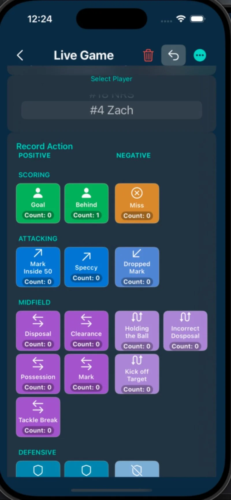

Score
Record your game live, in 16 sports, with or without a signal.
Live Game Scoring
Free
- Record scores, track time and capture every play as it happens
- Sport-specific scoring rules for goals, behinds, tries, points and sets
- Configurable timers with automatic period transitions
- 16 sports: 10 team sports and 6 racquet sports (racquet sports use simplified game tracking)
- Score offline at any ground, even with no mobile coverage

Stat Recording
Free
- Track 100+ customisable activities across 16 sports
- AFL: disposals, marks, tackles, goals, clearances, contested possessions
- Basketball: field goals, 3-pointers, rebounds, assists, steals
- Netball: centre pass efficiency, shooting accuracy, turnovers, intercepts
- Tennis: aces, double faults, winners, unforced errors
- Choose which activities show during live scoring so you capture what matters to your game
- Team mode and individual stat recording, plus player rotations and playing time

Voice Stat Recording
Premium
- Call out the action and ScorX logs it, so whoever is scoring keeps their eyes on the game
- Works for team sports only
- Needs iOS 26 or later. The rest of ScorX runs on iOS 18 or later
Import Your Team From a Spreadsheet
Free
- Bring your squad in from a PlayHQ spreadsheet export (.xlsx or .csv)
- No retyping the roster at the start of the season
- Free accounts hold up to 5 teams and 25 players
iPad Team Mode
Free
- Plan your lineup on the big screen before the game
- Pick which statistics to record, then score live with every player's buttons in view
- Built for the sideline: one iPad, the whole team

Share, Invite and Move Games
Free
- Game pack export and import: send a game to another device and load it back in
- Share Extension: send a file to ScorX from the iOS share sheet
- Match Invitations: share the stat recording with others so it is not all on one person
- Add player photos and jersey numbers, and switch between teams and sports
- One-touch game attendance, so players confirm availability